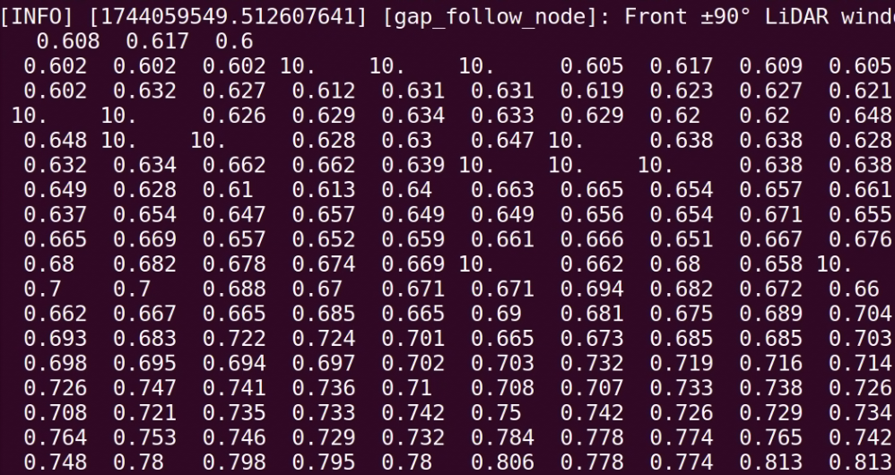

Preprocessing LiDAR Data¶
This page describes the implementation of the preprocess_lidar function, which is essential for preparing LiDAR sensor data before further analysis, such as gap detection.
Why Preprocess?¶
LiDAR sensors often produce data that include noisy or invalid values such as:
Infinite values (inf): Indicate measurements beyond the sensor’s maximum range.
Not-a-Number values (NaN): Result from failed sensor measurements.
Extreme values: Measurements that are too close or too far, beyond practical use.
Preprocessing ensures the reliability and accuracy of your navigation algorithms.
Detailed Implementation¶
Below is the Python implementation of the LiDAR preprocessing function, broken down with detailed comments for clarity:
import numpy as np
def preprocess_lidar(self, ranges, min_range=0.05, max_range=10.0):
"""
Preprocess the LiDAR scan array. Preprocessing steps may include:
1. Clipping maximum range values
2. Handling NaN or inf values
3. (Optional) Smoothing (e.g., moving average)
Args:
ranges (list): Raw LiDAR distance readings
Returns:
np.array: Cleaned and processed LiDAR distances
"""
# Convert incoming ranges list to a numpy array for efficient processing
processed_ranges = np.array(ranges, dtype=np.float32)
# 1. Clip values that are too far ( > 10 meters) to maximum distance
# Clip values that are too close( < .05 meters) to min distance
processed_ranges = np.clip(processed_ranges, min_range, max_range)
# 2. Replace NaN values (failed sensor measurements) with MAX_RANGE
processed_ranges[np.isnan(processed_ranges)] = max_range
# 2. Replace infinite values (measurements beyond sensor range) with MAX_RANGE
processed_ranges[np.isinf(processed_ranges)] = max_range
# Optional TODO: 3. Apply smoothing (e.g., moving average) if desired
# Return the cleaned and processed LiDAR range data
return processed_ranges
Usage¶
This function should be called every time new LiDAR data is received, typically at the start of your scan callback function.
Example usage in the scan_callback:
def scan_callback(self, msg):
processed_ranges = self.preprocess_lidar(msg.ranges)
# Continue with gap detection logic...
Example: Changing NaN and inf to 10m


Proper preprocessing enhances your gap-following algorithm’s reliability by ensuring it operates on clean, valid data.
(Optional) Smoothing¶
In addition to cleaning NaN and infinite values, another important preprocessing step is smoothing. Smoothing helps to eliminate small noisy spikes in LiDAR data while preserving the important obstacle structures.
Why Apply Smoothing?¶
Real-world LiDAR sensors introduce small random noise into distance measurements.
Smoothing removes small, isolated errors and makes obstacle shapes cleaner.
Helps gap-finding algorithms perform more reliably.
Moving Average Smoothing (Simple Concept)¶
We replace each LiDAR distance with the average of itself and its neighbors.
Example |
Moving Average (Window = 3) |
|---|---|
|
|
Notice how the 100.0 spike gets blended smoothly!
Python Code: Smoothing with Convolution¶
The most efficient way to apply moving average smoothing is using np.convolve:
import numpy as np
def smooth_lidar(self, ranges, window_size=5):
"""
Apply moving average smoothing to LiDAR scan data using convolution.
Args:
ranges (np.array): Raw or preprocessed LiDAR ranges
window_size (int): Size of the smoothing window (must be odd)
Returns:
np.array: Smoothed LiDAR ranges
"""
if window_size < 3:
return ranges # Skip if window too small to matter
kernel = np.ones(window_size) / window_size # Create a normalized averaging kernel
smoothed = np.convolve(ranges, kernel, mode='same') # Convolve while preserving array size
return smoothed
✅ This function automatically smooths your LiDAR data across a sliding window.
How Smoothing Fits into Preprocessing¶
You would call smoothing after:
Replacing NaN values
Replacing infinite values
Clipping maximum and minimum distances
Example inside preprocess_lidar:
proc_ranges = self.smooth_lidar(proc_ranges, window_size=5)
Why Convolution?¶
Manual Loop |
Convolution |
|---|---|
Slower, more code |
Faster, very clean |
Harder to debug |
Optimized and easy |
Not used in real systems |
Common professional method |
✅ Convolution is the professional way to smooth sensor data efficiently!
Tip: Choosing Window Size¶
Window Size |
Behavior |
|---|---|
3 |
Light smoothing |
5 |
Good balance (recommended) |
7+ |
Heavy smoothing (may blur obstacles) |
Note
For most robots, a window size of 5 works well. Only increase if your sensor is extremely noisy!
Before vs After Example¶
Raw Scan:
[1.0, 2.0, 100.0, 2.0, 1.0]
After Smoothing:
[1.0, 34.3, 34.7, 34.3, 1.0]
Sharp spikes are smoothed out.
Obstacle shapes are preserved!
✅ Now your robot can operate on clean, reliable LiDAR data — and your algorithms will work much better!